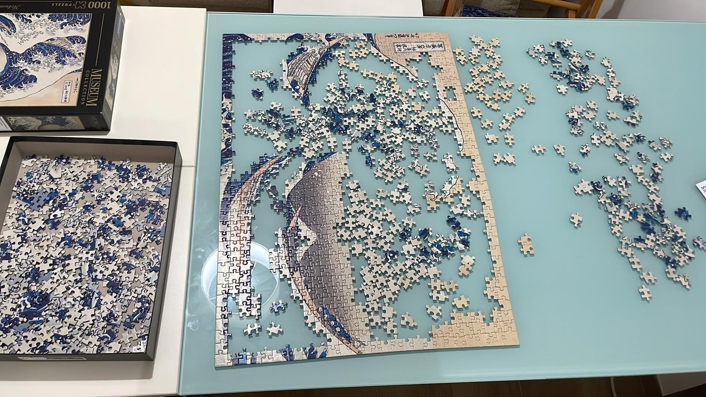

Come sono nati i puzzle?
I puzzle nascono a Londra, intorno al 1760, grazie all’incisore e cartografo John Spilsbury. Applicò una carta geografica su una tavola di legno e la ritagliò lungo i confini dei paesi, creando le dissected maps (“mappe smontate”). Servivano a insegnare la geografia ai bambini, che ricomponendo la mappa imparavano la forma e la posizione dei territori. All’inizio erano quindi uno strumento educativo e costavano parecchio, perciò erano destinati soprattutto alle famiglie benestanti. Gli esemplari più antichi che si conservano, come la mappa dell’Europa nella foto, sono del 1766.
Come sono cambiati nel tempo
- Fine Settecento e Ottocento: i soggetti si allargano oltre le mappe, con scene storiche, religiose e di vita quotidiana, e diventano un passatempo anche per gli adulti. I pezzi si ritagliavano a mano nel legno con seghe sottili, da cui il nome inglese jigsaw puzzle.
- Inizio Novecento: si diffondono i puzzle di cartone, tagliati con fustelle (stampi in metallo), che li rendono molto più economici.
- Anni Trenta: durante la Grande Depressione negli Stati Uniti i puzzle diventano un successo di massa, perché offrivano un divertimento a basso costo.
- Oggi: si producono puzzle da poche decine di pezzi a molte migliaia, e le aziende più note sono Ravensburger, Clementoni e Educa.

Uno dei primi puzzle: l'Europa divisa nei suoi regni, di John Spilsbury (1766). Immagine da Wikimedia Commons.

Io mentre costruisco un puzzle.